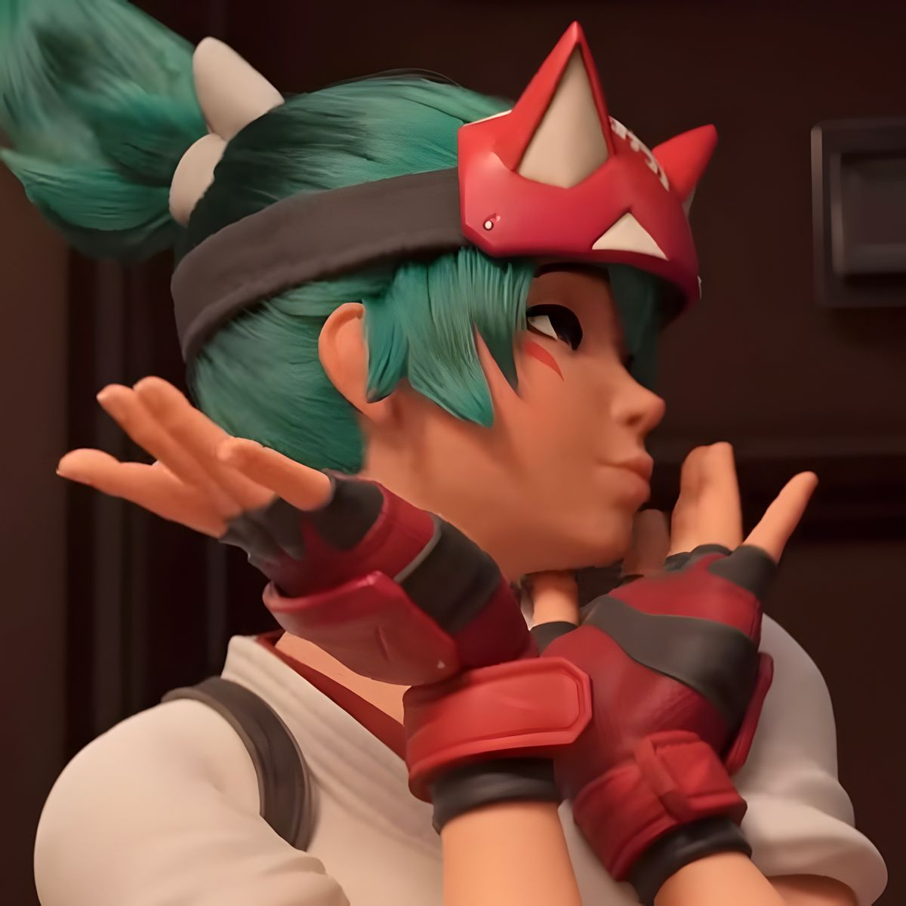

Overwatch has many unique support heroes who help their team stay alive and win fights. Mercy, Kiriko, and Juno are three strong support characters who each bring something different to the battlefield and are my most played heroes in the game.
Mercy
Mercy is a main support hero known for her strong healing and ability to revive teammates.
She uses her Caduceus Staff to either heal allies or boost their damage. Mercy can fly
quickly to teammates using Guardian Angel, which makes her very mobile and hard to catch.
Her ultimate ability, Valkyrie, increases her healing and lets her fly freely, making her
even more powerful during team fights. She is the my most played hero, and the hero I have been able to
reach Masters rank in competitive play.
Kiriko
Kiriko is a fast and flexible support hero. She throws healing ofuda to restore health to teammates and can deal critical damage with her kunai. One of her most important abilities is Protection Suzu, which makes teammates briefly invulnerable and cleanses negative effects. Her ultimate, Kitsune Rush, creates a path that increases movement speed and attack speed for her team, helping them push forward aggressively. She also has one of the franchise's best animated shorts, you can watch it here.
Juno
Juno is a newer support hero who focuses on mobility and utility. She can move quickly around the map and support teammates from different positions. Juno provides healing while also helping control space during fights. Her abilities allow her to assist her team while staying safe and repositioning easily, making her a valuable support option in many team compositions.